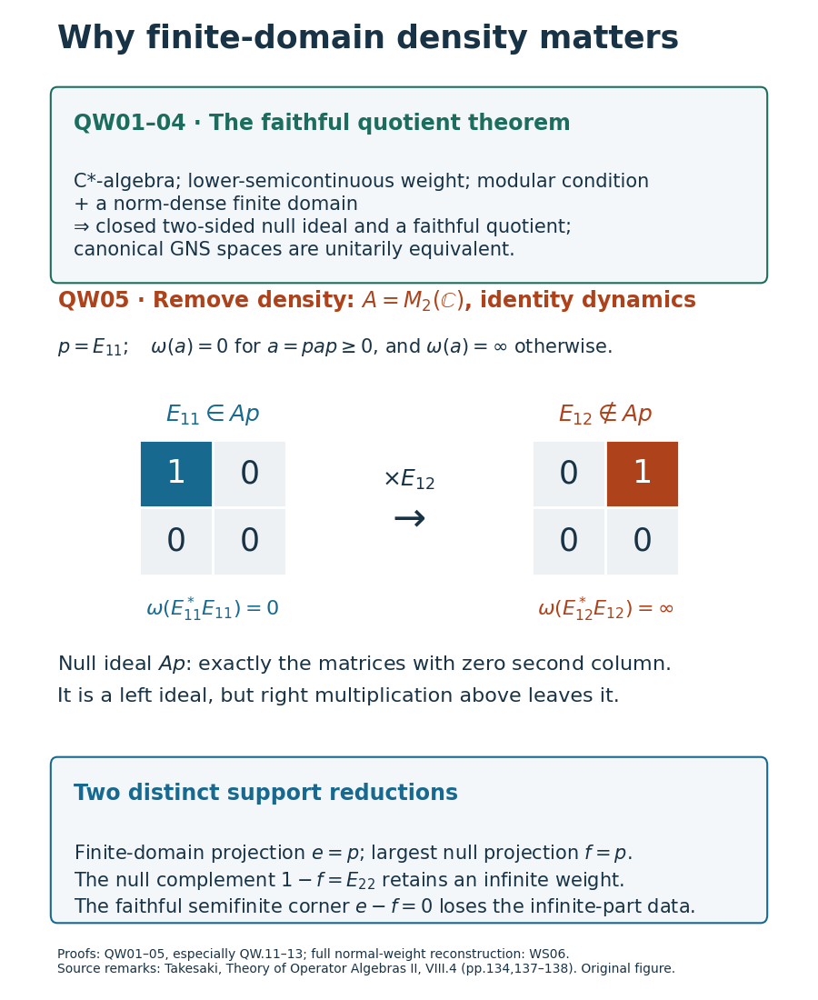

Null ideals and faithful quotients of modular weights
Reading goal. Determine when the zero-energy left ideal is a two-sided ideal, descend every value of the weight to the quotient, and distinguish this operation from removing the infinite part of a normal weight.
The unnumbered discussion before Takesaki, Theory of Operator Algebras II, VIII.4.11, printed137–138, reduces a modular C*-weight to a faithful quotient. The finite-domain density assumption is made explicit below. The normal-weight support remark after VIII.4.4, printed134, requires a separate distinction between null directions and directions without finite approximation. Both distinctions are demonstrated by an explicit matrix example.
We use the finite-domain GNS construction, the finite positive approximate identity, uniqueness from one strip boundary, and the C*-modular boundary convention. Quotient norm and positive lifting arguments needed here are proved below. Inner products are linear in the first variable. No separability or faithfulness of the original weight is assumed.
The modular condition makes the null ideal two-sided in the dense case
Let \(A\) be a C*-algebra and \(\varphi\) a norm-lower-semicontinuous weight. Suppose its finite left ideal \(\mathfrak n_\varphi\) is norm dense in \(A\), and that it satisfies the modular condition for an automorphism group \(\alpha\). Define \[ I=\{x\in A:\varphi(x^*x)=0\},\qquad \mathfrak a_\varphi=\mathfrak n_\varphi\cap\mathfrak n_\varphi^*. \tag{QW.1} \] The finite-domain inequalities in CS make \(I\) a linear left ideal. Lower semicontinuity and continuity of \(x\mapsto x^*x\) make it norm closed. Invariance of the weight makes it \(\alpha\)-invariant. It remains to prove stability under adjoints.
First let \(y\in I\cap\mathfrak a_\varphi\). Apply the modular condition to the pair \((y^*,y)\). Its bounded strip function satisfies \[ F(t)=\varphi(\alpha_t(y^*)y) =\langle\Lambda_\varphi(y),\Lambda_\varphi(\alpha_t(y))\rangle=0, \qquad F(i)=\varphi(yy^*). \tag{QW.2} \] Invariance puts every displayed element in the required finite domain. The zero lower boundary and MA-08 imply that the entire strip function is zero. Consequently \(y^*\in I\).
By CS, density of \(\mathfrak n_\varphi\) is equivalent to density of \(\mathfrak m_\varphi\). LW-04 therefore supplies a positive contractive approximate identity \((e_\lambda)\) of \(A\) contained in \(\mathfrak m_\varphi\), without any faithfulness assumption. For arbitrary \(x\in I\), the element \(y_\lambda=e_\lambda x\) is in \(I\); its adjoint \(x^*e_\lambda\) is finite because \(e_\lambda\in\mathfrak n_\varphi\) and that domain is a left ideal. Thus \(y_\lambda\in I\cap\mathfrak a_\varphi\). The preceding argument gives \(x^*e_\lambda\in I\). Since these elements converge in norm to \(x^*\) and \(I\) is closed, \(x^*\in I\).
Finally, for \(x\in I\) and \(a\in A\), left ideality gives \(a^*x^*\in I\); taking adjoints gives \(xa\in I\). Hence \(I\) is a closed, two-sided, self-adjoint, invariant ideal. The approximate identity is a net; no countability assumption has entered. Pointwise norm continuity of \(\alpha\) is not needed for this conclusion. \(\square\)
The quotient norm and positive lifts
For completeness let \(I\) be any closed two-sided self-adjoint ideal of a C*-algebra \(A\). On the algebraic quotient put \[ B=A/I,\qquad q:A\longrightarrow B,\qquad \|q(a)\|=\inf_{j\in I}\|a+j\|. \tag{QW.3} \] Closedness makes this a norm. The ideal property makes multiplication well defined and submultiplicative: approximate the two quotient norms by lifts and multiply those lifts. The involution is isometric because \(I=I^*\).
The quotient is complete. For a Cauchy sequence of cosets, choose a subsequence whose successive differences have quotient norms less than \(2^{-k}\). Lift each difference to an element of \(A\) with norm less than \(2^{1-k}\). Starting with a lift of the first coset, the sums of these lifts converge in the Banach space \(A\). Their quotient converges to the chosen subsequence; the original Cauchy sequence has the same limit.
Let \((u_\lambda)\) be a positive contractive approximate identity of the C*-algebra \(I\), supplied by BG. Products with \(1-u_\lambda\) are taken in the forced unitization. For any \(a\in A\), \[ \|q(a)\|=\lim_\lambda\|a(1-u_\lambda)\|, \qquad \|q(a)\|^2=\lim_\lambda \|(1-u_\lambda)a^*a(1-u_\lambda)\|. \tag{QW.4} \] Indeed, \(a-a(1-u_\lambda)=au_\lambda\in I\) gives the lower bound for the first limit. For any \(j\in I\), \(\|a(1-u_\lambda)\|\leq\|a+j\|+\|j(1-u_\lambda)\|\); take a limsup, then the infimum over \(j\). The second equality is the C*-identity in \(A\).
For any \(j\in I\), the norm in the second limit is at most \(\|a^*a+j\|+\|(1-u_\lambda)j(1-u_\lambda)\|\). The last term tends to zero. Thus \(\|q(a)\|^2\leq\|q(a^*a)\|\). Submultiplicativity and the isometric involution give the reverse inequality. This proves the C*-identity for \(B\), so \(B\) is a C*-algebra and \(q\) is a contractive star-homomorphism.
Every \(b\in B_+\) has a positive lift: lift its square root to some \(x\in A\), then \(q(x^*x)=b\). We shall also need a convergent choice of positive lifts. If \(b_n\to b\) in \(B_+\), square-root continuity gives \(b_n^{1/2}\to b^{1/2}\). For this continuity assertion, put the spectra of all the positive inputs in one compact interval, approximate the square-root function there uniformly by polynomials, and use norm continuity of each polynomial evaluation. The norm estimate for continuous functional calculus, proved in AC3–4, makes the approximation error uniform in the inputs. Fix any lift \(x\) of \(b^{1/2}\). Choose lifts \(h_n\) of \(b_n^{1/2}-b^{1/2}\) with \[ \|h_n\|\leq2\|b_n^{1/2}-b^{1/2}\|, \qquad a_n=(x+h_n)^*(x+h_n),\quad a=x^*x. \tag{QW.5} \] When the quotient difference is zero choose \(h_n=0\); otherwise the defining infimum provides the stated bound. Then \(a_n\to a\) in norm, \(q(a_n)=b_n\), and \(q(a)=b\). No globally defined continuous section of \(q\) is required. The same proof includes \(I=0\), \(I=A\), and the zero algebra. \(\square\)
Every positive value descends, including infinity
Return to QW-01 and set \(B=A/I\). There is a unique faithful, norm-lower-semicontinuous weight \(\bar\varphi\) on \(B\) such that \[ \varphi(a)=\bar\varphi(q(a))\qquad(a\in A_+). \tag{QW.6} \]
To prove well-definedness, let \(a,b\in A_+\) have the same quotient. The quotient homomorphism commutes with polynomials and their norm limits, hence with positive square roots; it gives \(q(a^{1/2})=q(b^{1/2})\). Hence \(a^{1/2}-b^{1/2}\in I\subseteq\mathfrak n_\varphi\). Since the finite left ideal is linear, \(a^{1/2}\) is finite if and only if \(b^{1/2}\) is finite. In that case their GNS vectors agree, since their difference is null, and their squared norms give \(\varphi(a)=\varphi(b)\). Otherwise both values are infinite. Define \(\bar\varphi\) by this common value; QW-02 supplies positive lifts of every positive coset.
Positive lifts of two inputs and their sum prove additivity; scalar multiples of lifts prove homogeneity, with \(0\cdot\infty=0\). Positive surjectivity proves uniqueness. If \(\bar\varphi(b)=0\), a positive lift \(a\) has \(a^{1/2}\in I\), hence \(b=q(a)=0\). This proves faithfulness.
For lower semicontinuity, let \(b_n\to b\) be positive cosets. Use the convergent positive lifts of QW-02 and (QW.6): \[ \bar\varphi(b)=\varphi(a) \leq\liminf_n\varphi(a_n) =\liminf_n\bar\varphi(b_n). \tag{QW.7} \] This sequential test suffices because the positive cone has a metric from the norm. The proof does not infer closedness from the image of an arbitrary closed set under a quotient map. \(\square\)
Finite domains, modular strips and the exact GNS kernel
All finite domains descend with exact inverse images: \[ \mathfrak n_\varphi=q^{-1}(\mathfrak n_{\bar\varphi}),\qquad \mathfrak a_\varphi=q^{-1}(\mathfrak a_{\bar\varphi}),\qquad q(\mathfrak m_\varphi)=\mathfrak m_{\bar\varphi}. \tag{QW.8} \] The first equality follows by applying (QW.6) to \(x^*x\); applying it also to \(xx^*\) gives the second. Finite squares and polarization from CS give the third. Surjectivity of \(q\) makes the finite-left and finite-adjoint images onto as well. The image of the original norm-dense finite domain is dense, so \(\bar\varphi\) is C*-semifinite.
Invariance of \(I\) defines \(\bar\alpha_t(q(a))=q(\alpha_t(a))\). These are well-defined star-automorphisms with the same group law. If \(\alpha\) is pointwise norm continuous, contractivity of \(q\) proves the same for \(\bar\alpha\). Invariance of \(\bar\varphi\) follows from (QW.6). For any finite-adjoint pair in \(B\), (QW.8) gives finite-adjoint lifts in \(A\). The strip for those lifts has exactly the required quotient boundary values; the finite linear extensions agree on \(\mathfrak m\) by polarization and (QW.6). Thus the full modular condition descends.
The map on the actual finite GNS domains \[ U\Lambda_\varphi(x)=\Lambda_{\bar\varphi}(q(x)), \qquad x\in\mathfrak n_\varphi, \tag{QW.9} \] preserves squared norms by (QW.6). It is well defined and linear, and polarization gives all inner products. Its extension is isometric with closed range; surjectivity of the finite-domain image makes that range dense, hence all of \(H_{\bar\varphi}\). Left multiplication on the GNS core gives \[ U\pi_\varphi(a)U^*=\pi_{\bar\varphi}(q(a)),\qquad \ker\pi_\varphi=I. \tag{QW.10} \] For the kernel assertion, prove faithfulness of the quotient GNS representation directly. If \(\pi_{\bar\varphi}(b)=0\), then every \(z\in\mathfrak n_{\bar\varphi}\) satisfies \(\bar\varphi(z^*b^*bz)=0\). Faithfulness of \(\bar\varphi\) gives \(bz=0\). Density of that finite domain and an approximate identity of \(B\) give \(b=0\). The unitary formula now identifies the original kernel with \(\ker q=I\). This reduction permits the faithful C*-modular extension theorem to be applied to \(B\), without presupposing a faithful normal envelope on the original representation. \(\square\)
A matrix obstruction and the two support projections
Let \(A=M_2(\mathbb C)\), let \(p=E_{11}\), and give it the identity dynamics. Define \[ \omega(a)= \begin{cases}0,&a=pap,\\+\infty,&a\ne pap,\end{cases} \qquad a\in A_+. \tag{QW.11} \] For positive matrices, \(a=pap\) is equivalent to \(\langle ae_2,e_2\rangle=0\): the latter says \(a^{1/2}e_2=0\). This also shows that a positive sum is supported in \(p\) exactly when both summands are. Consequently (QW.11) is additive and homogeneous. Every finite nonnegative sublevel set is the closed cone \((pAp)_+\), so the weight is norm lower semicontinuous. It is normal as well: for an increasing bounded positive net, the \(e_2\) matrix coefficient increases to that of the supremum. If that coefficient is positive, some member already has positive coefficient and infinite weight; if it is zero, all members and the supremum have weight zero.
For an arbitrary matrix \(x\), \(x^*x\) is supported in \(p\) exactly when \(xe_2=0\). Therefore \[ \mathfrak n_\omega=I_\omega=Ap =\left\{\begin{pmatrix}a&0\\b&0\end{pmatrix}:a,b\in\mathbb C\right\}, \qquad \mathfrak a_\omega=pAp. \tag{QW.12} \] The identity action preserves the weight. Every pair in \(pAp\) has both products in that corner and weight zero; the constant zero strip supplies the modular boundary condition. Nevertheless the null ideal is not two-sided: \[ E_{11}\in I_\omega,\qquad E_{11}E_{12}=E_{12}\notin I_\omega, \qquad \omega(E_{12}^*E_{12})=\omega(E_{22})=+\infty. \tag{QW.13} \] Its finite domain is not norm dense. Every finite GNS vector is null, so its GNS Hilbert space is zero and \(\ker\pi_\omega=A\), strictly larger than \(I_\omega\). Thus the modular boundary condition alone, interpreted for arbitrary lower-semicontinuous weights as in KM-07, does not imply the faithful-quotient reduction. The C*-semifinite hypothesis in QW-01 is essential for that general assertion.
This same weight clarifies the support remark for normal weights. In the notation of WS, its finite-domain projection and largest null projection are both \(p\). The complement \(r=1-p\) of the null projection preserves the whole weight by compression, but the resulting weight on \(rAr\cong\mathbb C\) is infinite on every nonzero positive element and is not semifinite. The faithful semifinite corner instead has identity \(p-p=0\). That zero corner alone cannot recover (QW.11): the reconstruction also requires the finite-domain projection and the rule assigning infinity outside its positive corner. These are exactly the two cases in WS-06. For an originally semifinite normal weight the finite-domain projection is one, and the two support conventions coincide.
For comparison, take \(A=\mathbb C\oplus\mathbb C\), \(\rho(a,b)=a\) on positive pairs, and again the identity dynamics. This is a bounded positive functional, so its finite domain is all of \(A\). The null ideal is \(0\oplus\mathbb C\); the quotient is \(\mathbb C\), with faithful weight \(\bar\rho(a)=a\). Its GNS map is \(\Lambda_\rho(a,b)=a\), and the representation kernel is exactly the null ideal. This example satisfies the density hypothesis that fails in the matrix example.

The two source remarks are therefore used with precise scope: the modular C*-quotient reduction retains C*-semifiniteness, while a general normal weight requires both its finite-domain and null projections. Removing only the null directions does not remove an infinite part.